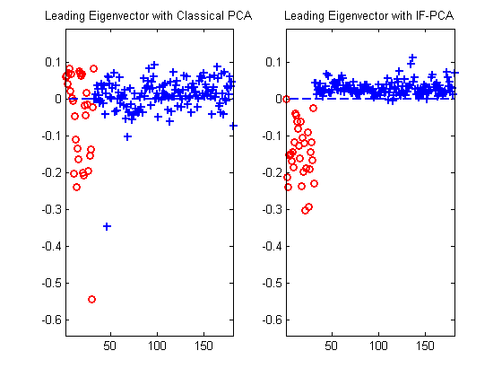

Important Features PCA for High Dimensional Clustering
The high dimensional clustering problem where the number of clusters are known and the signal is sparse can be solved by IF-PCA method, as shown here using ifpca function.
Contents
An example with Lung Cancer data
load('lungCancer.mat'); Data = [lungCancer_test(1:149, 1:12533); lungCancertrain(:, 1:12533)]; Data = Data'; Class = [lungCancer_test(1:149, 12534); lungCancertrain(:, 12534)]; [p, n] = size(Data); % Run the data with IF-PCA method. Find the corresponding estimated labels % and error rate [IFlabel, stats, L] = ifpca(Data, 2); t = crosstab(IFlabel, Class); IFerr = min(sum(diag(t))/n, 1 - sum(diag(t))/n) % Run the data with classical PCA method without feature selection, and % record the corresponding estimated labels and error rate gm = mean(Data'); gsd = std(Data'); Data = (Data - repmat(gm', 1, n))./repmat(gsd', 1, n); G = Data'*Data; [Cv, ~] = eigs(G, 1); Clabel = kmeans(Cv, 2, 'replicates', 30); t = crosstab(Clabel, Class); Cerr = min(sum(diag(t)), n - sum(diag(t)))/n
IFerr =
0.0331
Cerr =
0.1215
Comparison of the leading eigenvectors with IF-PCA and classical PCA
Find the leading eigenvector for post-selection data matrix
data_select = Data(stats.ranking(1:L), :); G = data_select'*data_select; [IFv, ~] = eigs(G, 1); % Draw the plot, with 0 as the threshold (blue dot line) to cluster the two % groups. Use the red dots and the blue crossing to differentiate the two % groups under truth. g1 = find(Class == 1); g2 = find(Class == 0); subplot(121) plot(1:length(g1), Cv(g1), 'ro', (length(g1)+1):n, Cv(g2), 'b+', 1:n, 0*(1:n), 'b--', 'linewidth', 2) title('Leading Eigenvector with Classical PCA') axis([1 n min(Cv) - 0.1, max(Cv)+0.1]) subplot(122) plot(1:length(g1), IFv(g1), 'ro', (length(g1)+1):n, IFv(g2), 'b+', 1:n, 0*(1:n), 'b--', 'linewidth', 2) title('Leading Eigenvector with IF-PCA') axis([1 n min(Cv) - 0.1, max(Cv)+0.1]) % In the figure it can be found that IF-PCA works much better